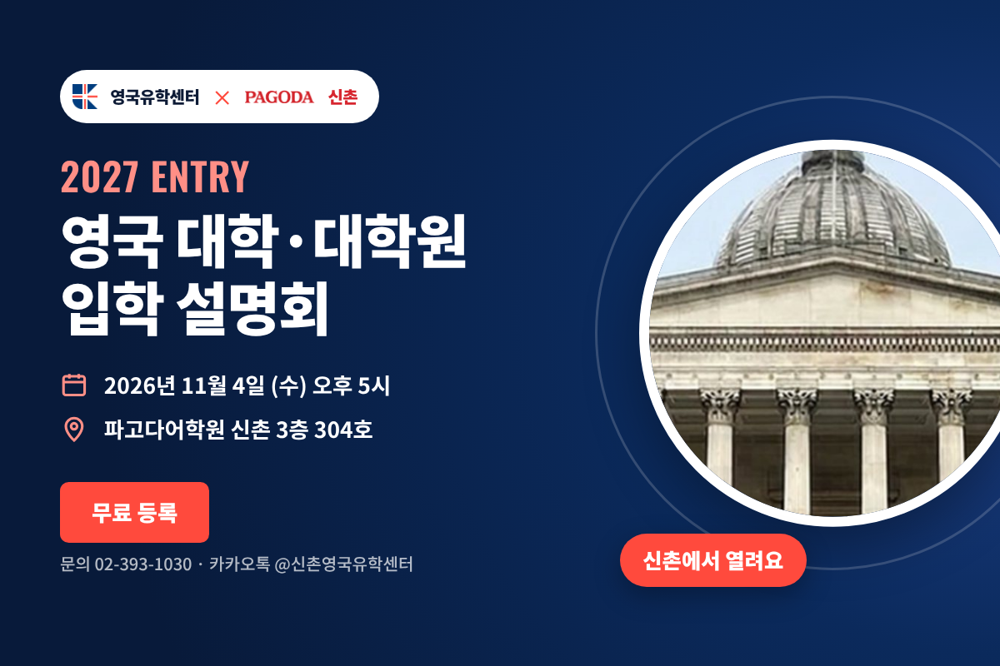
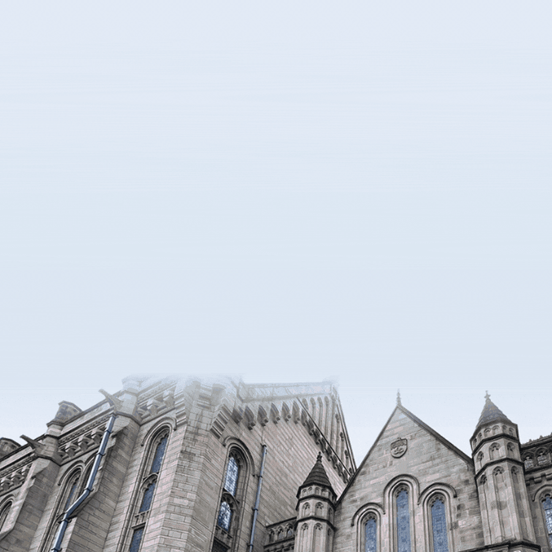

2027 영국 대학·대학원 입학 설명회 | 신촌

영국유학센터와 파고다어학원 신촌이 함께하는 입학 설명회입니다. 입학 요건부터 합격 사례, IELTS 전략까지 한 자리에서 알려드립니다.
이정민 지사장 (영국유학센터) · 이든 IELTS 대표강사 (파고다어학원 신촌)
파고다어학원 신촌 3층 304호
2026-11-04 5:00 PM
2027 영국 대학·대학원 진학을 준비하는 학생, 학부모님
영국유학센터 × 파고다어학원 신촌
전화 02-393-1030 | 이메일 j.lee@ukcentre.co.kr | 카카오톡: 영국유학센터 신촌점
내년 영국유학을 계획하신다면?
2027년 영국 대학교/대학원 입학 설명회에서 한 발 먼저 준비하세요
신촌에서 열리는 첫 번째 가을 설명회를 11월 4일(수) 오후 5시, 파고다어학원 신촌에서 개최합니다!
영국 유학 전문가 영국유학센터와 IELTS 교육 전문가 파고다어학원 신촌, 두 전문가 그룹이 함께 준비했습니다.
왜 영국 유학인가?
- 16개 영국 대학, 전 세계 TOP 100 (QS World University Rankings 2027)
- 한국 학생 영국 학생비자 발급률 99.6% (2025 UKVI 기준)
- 학사 3년·석사 1년의 짧고 집중적인 과정
- 미국 대비 합리적인 유학 비용
- 졸업 후 18개월 취업 가능 Graduate Route 비자
2027 영국 대학교/대학원 입학 설명회
이번 설명회에서는 입학 조건, 지원 절차, 인기 전공, IELTS 준비까지 영국 유학 준비에 꼭 필요한 정보를 한 자리에서 알려드립니다.
일시
- 2026년 11월 4일(수) 오후 5시
설명회 내용
- 영국 유학의 장점과 학제
- 영국 대학교/대학원 입학 요건과 지원 절차
- 실제 합격 사례
- 인기 전공: 경영, 컴퓨터 과학, 약대 등
- 영국 유학 비용과 장학금 정보
- IELTS 준비 전략
발표자
- 이정민 지사장 (영국유학센터)
- 이든 IELTS 대표강사 (파고다어학원 신촌)

참가자 혜택
1. 파고다어학원 신규 수강생 대상
- IELTS 인강 1개월 무료 수강권 제공 (수강권 등록 기한: 2026년 12월 31일까지 / 수강 가능 기간: 수강권 등록일로부터 30일간)
- 파고다어학원 IELTS 수강료 2만 원 추가 할인 (2027년 2월 수강분까지 적용, 파고다 신촌에서 현재 진행 중인 기존 할인 혜택과 중복 적용 가능)
2. 파고다어학원 재수강생 대상
- IELTS 수강료 1만 원 할인 (2027년 2월 수강분까지 적용, 파고다 신촌에서 현재 진행 중인 기존 재수강생 대상 할인 혜택과 동일하게 적용)
3. 신규 및 재수강생 공통 혜택
- 원어민 IELTS Speaking 모의시험(Mock Test) 1회 제공 (2026년 11월 한정, 온라인 Zoom, 11월 3~4주 차 진행 예정 / 학원 스터디 운영 일정에 따라 안내된 요일·시간 중 선택 가능)
- 설명회 참석 후 파고다 신촌 대표 강사 이든 선생님 수업 등록 시 자체 교재 증정
4. 설명회 참석자 전원
- 영국유학센터 유료 수속 시 수속료 10% 할인 (설명회 참석 후 1개월 이내 등록자)
영국유학센터를 통한 파운데이션, IYO, 석사과정 지원은 무료입니다.
추가 상담
- 설명회 종료 후, 추가 상담 진행
- 참석은 무료이며, 영국 유학에 대해 직접 질문할 수 있는 기회를 놓치지 마세요.
장소
클릭하시면 네이버 지도로 이동합니다.
영국유학센터 소개
영국유학센터는 2006년 설립된 영국 전문유학원으로, 약 30개 영국 대학교의 한국 공식 에이전시이며, 매년 500여건의 합격 케이스를 갖고 있습니다.
학생의 학력과 목표 대학교, 예산, 성향 등 다양한 부분을 충분히 고려하여 학생에게 최적의 대학교로 진학할 수 있도록 합니다.
신청
아래 버튼을 눌러 영국유학센터 공식 신청서에서 연락처를 남겨주세요.
문의
- 영국유학센터 www.ukcentre.co.kr
- 영국유학센터 신촌점 전화: 02-393-1030
- 카카오톡: 영국유학센터 신촌점
설명회 신청하기
2026년 11월 4일(수) 오후 5시
파고다어학원 신촌 3층 304호 · 참석 무료
원문과 동일한 설명회의 영국유학센터 공식 신청서가 새 창에서 열립니다.
이메일·성명·휴대폰 입력과 인증은 해당 신청 페이지에서 진행합니다.